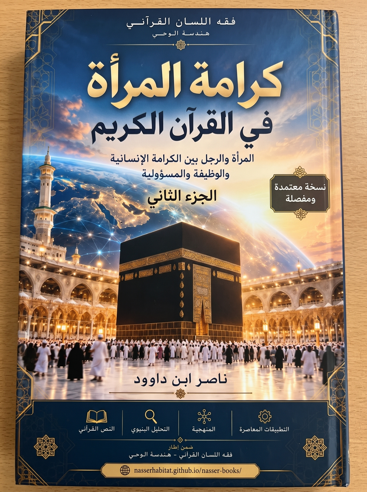

138. كرامة المرأة في القرآن — الجزء الثاني: المرأة والرجل: تحرير ميزان العلاقات وسيادة الاستخلاف

دراسة منهجية وفق نظام QCROS وفقه اللسان القرآني تفحص الميزان التشغيلي والتشريعي للعلاقات بين المرأة والرجل في حق الحياة والبيان، وبناء الميثاق الغليظ، وضوابط التعدد، وملك اليمين، والطلاق والعدّة، وحدود الرجوع ونقد التحايل.
النسخة الإنجليزية تكييف مفاهيمي مختصر؛ يبقى النص العربي المرجع الأساسي.
قراءة PDF داخل الموقع / Read the PDF on this website
جارٍ تجهيز القارئ… / Preparing the reader…
ملخص الكتاب وفهرسه الموضوعي (مقتطف نصي للفهرسة والبحث)
كرامة المرأة في القرآن
الجزء الثاني
المرأة والرجل: تحرير ميزان العلاقات وسيادة الاستخلاف
ناصر ابن داوود
2026
الطبعة العربية المنقحة للنشر — نوفمبر 2026 | معتمدة على R7
© 2026 ناصر ابن داوود. يُتاح الكتاب مجانًا وفق رخصة المشاع الإبداعي نَسب المُصنَّف–الترخيص بالمثل 4.0 دولي (CC BY-SA 4.0)، مع نسبة العمل لمؤلفه وبيان التعديلات. المكتبة الرقمية: https://nasserhabitat.github.io/nasser-books-v2/ .
ملاحظة منهجية للقارئ: القرآن الكريم هو المدونة الحاكمة، وما يرد من استنباط أو فرضية أو نموذج تشغيلي يُقرأ ضمن مرتبته في منهج QCROS. قوبلت الاقتباسات القرآنية في الجولة R5 مقابلةً نصيةً مجرّدة بعد توحيد الرسم للمقارنة، ولا يُفهم منها تحقيق جميع أوجه الرسم والضبط أو حسم المسائل التفسيرية والفقهية المفتوحة. ويتاح سجل التدقيق المفصل ضمن ملفات المشروع.
1 ملخص موجّه للباحثين والمختصين
يمثل هذا المجلد (الجزء الثاني من كتاب «كرامة المرأة في القرآن») الانتقال المنهجي من «تأصيل القيمة والوظيفة والمسؤولية» — الذي تأسس في الجزء الأول — إلى «فحص الميزان التشغيلي والتشريعي للعلاقات» بين المرأة والرجل في مجالات الخطاب والبيان، وبناء الميثاق الغليظ، وضوابط التعدد، وتحرير ملف ملك اليمين، وإدارة تعثر العلاقة والطلاق، وحدود الرجوع ونقد التحايل، وصولاً إلى التنزيل الحضاري والممارسة الاجتماعية.
تلتزم الدراسة بمنهجية (QCROS) القائمة على الفصل الصارم بين خمس مراتب للدليل: النص القرآني في مورده، والبيان اللغوي والسياقي، والاستنباط المقيد بشروطه، والفرضية القابلة للاختبار، والنموذج التشغيلي أو التطبيقي. ويحمي هذا الفصل البحث من آفتين متقابلتين: آفة تحميل النص القرآني تبعات الأعراف التاريخية والتفسيرات المنتقصة من كرامة الإنسان، وآفة إسقاط المصطلحات المعاصرة أو النماذج الرمزية على الألفاظ القرآنية لإلغاء أحكامها النصية المحكمة في المدد والأنصبة والشروط.
وتنتهي الأبواب السبعة إلى نتائج محورية مضبوطة بمواردها:
1. في حق الحياة والبيان (الباب الأول): إثبات استقلال أصل كرامة المرأة وأهليتها للمحاججة والشورى (المجادلة: 1؛ النمل: 32–35؛ القصص: 26) عن الخلاف التفسيري في آية الحلية (الزخرف: 18)، وتثبيت دلالة القتل العيني في آيتي الموءودة (التكوير: 8–9) مع تقعيد «الوأد المعرفي والاجتماعي» بوصفه اصطلاحاً نقدياً من بناء الباحث لتشخيص ممارسات حجب الصوت والإرادة.
2. في فقه الوجدان والميثاق الغليظ (الباب الثاني): الكشف عن التكامل البنيوي بين الغاية الوجدانية (السكن والمودة والرحمة في الروم: 21) والمتانة التعاقدية (الميثاق الغليظ والإفضاء المتبادل في النساء: 21)، وتأصيل ضوابط «طيب النفس» ومنع العضل، وتحرير كرامة الرجل من اختزال قيمته الإنسانية في التمويل المادي وحده أو الوقوع في وهم الاستغناء (البقرة: 187؛ الطلاق: 7؛ العلق: 6–7).
3. في النكاح والتعدد وميزان القسط (الباب الثالث): ربط آية النساء (3) بسياق القسط في اليتامى، وإثبات الدلالة العددية لصيغ (مثنى وثلاث ورباع) بالشواهد القرآنية المقابلة (فاطر: 1؛ سبأ: 46)، مع الجمع المنهجي بين شرط العدل الظاهر (النساء: 3) ونفي استطاعة التسوية القلبية الكاملة وتحريم ترك المرأة «كالمعلقة» (النساء: 129)، وفحص توجيه «فواحدة» في حالة الخوف من عدم العدل دون تعميم حكم يتجاوز شرط الآية ﴿ذَٰلِكَ أَدْنَىٰ أَلَّا تَعُولُوا﴾.
4. في ملك اليمين وكرامة المرأة (الباب الرابع): استقراء موارد التعبير وإسناده إلى الرجال والنساء (النور: 31؛ الأحزاب: 55)، والتمييز بين الواقع التاريخي وما نصت عليه النساء: 25 من شروط نكاح الفتيات بإذن الأهل وإيتاء الأجور والإحصان، وما ورد في النور: 33 من النهي عن الإكراه والأمر بالمكاتبة المقيّد بعلم الخير، إلى جانب موارد فك الرقبة (البلد: 13) والمنّ والفداء في سياق الأسرى (محمد: 4). ويقترح البحث من مجموع ذلك مسارًا نحو التحرير ومقاومة الاستغلال، مع إبقاء دعوى الإغلاق التشريعي التاريخي الشامل مفتوحة لاستقراء مستقل.
5. في تعثر الميثاق والطلاق وحفظ الحقوق (الباب الخامس): إثبات اشتراك وصف النشوز بين الزوجين (النساء: 34، 128) دون تماثل آلي في الإجراءات، وتحرير الفروق اللسانية والتشريعية بين (الطلاق، والتسريح، والفراق)، والجمع بين مدد العدّة وأحوالها المصرّح بها في النص وبين آثارها الاجتماعية والنفسية المحتملة، مع إبقاء تفسير «القروء» محلّ بحث لغوي وفقهي، وضبط النهي عن إخراج المطلقة من بيتها خلال العدة مع الاستثناء المذكور في الطلاق: 1، وبحث المتاع بالمعروف وشروطه، ومنع المضارة بالولد (البقرة: 228–241؛ الطلاق: 1–7).
6. في حدود الرجوع ونقد التحايل (الباب السادس): تحليل البينونة الكبرى وشرط ﴿حَتَّىٰ تَنكِحَ زَوْجًا غَيْرَهُ﴾ (البقرة: 230) بوصفه حداً يمنع العبث بالميثاق، وإثبات دلالة التفاعل المشترك في ﴿أَن يَتَرَاجَعَا﴾، ونقد ممارسات «المحلل» وفقه الحيل صيانةً لكرامة المرأة والرجل من التحول إلى أداة مؤقتة.
7. في التنزيل الحضاري والممارسة الاجتماعية (الباب السابع): تفكيك ثقافة وصمة الانفصال، واقتراح معايير عملية لقياس القسط الأسري والتسريح بإحسان، وضبط حدود الاستفادة من نموذج «إعادة التموضع الوجودي» في الشراكات دون إسقاط أحكام الأسرة الخاصة عليها.
2 ملخص موجّه لعامة القراء
يكمل هذا الجزء الثاني رحلة البحث التي بدأناها في الجزء الأول حول سؤال واضح: كيف تتجلى كرامة المرأة وكرامة الرجل في واقع الحياة الزوجية والأسرية، منذ لحظة الاختيار وبناء العلاقة، مروراً بإدارة الخلافات، وصولاً إلى لحظة الانفصال إذا تعذرت الحياة المشتركة؟
يقدم الكتاب قراءة قرآنية متوازنة تنصف المرأة والرجل معاً؛ فهي تحرر المرأة من نظرة الانتقاص أو الإقصاء أو الإكراه أو التعليق، وتحرر الرجل من اختزال قيمته في جيبه وإنفاقه أو تصويره كائناً لا يحتاج إلى السكن والمودة والرحمة. فالزواج في القرآن «ميثاق غليظ» يقوم على التراضي واللباس المتبادل والمعاشرة بالمعروف، لا صفقة مادية ولا ساحة صراع.
ويوضح الكتاب بأسلوب ميسر كيف عالج القرآن أصعب القضايا الأسرية: فالتعدد ليس رخصة مفتوحة للهو أو استعراض الثروة، بل هو مقيد بشرط القسط والعدل الصارم وتحريم إضرار الزوجة أو تركها كالمعلقة. ويبحث الكتاب ما ورد عن «ملك اليمين» في سياق تاريخي، إلى جانب أحكام النكاح والإحصان والأجر والمكاتبة وفك الرقبة؛ ويرى في هذه الموارد وجوهًا مؤيدة للتحرير وصيانة الإنسان، دون اعتبار القول بانتهاء الرق تشريعيًا في جميع الأحوال نتيجةً نصيةً مقطوعًا بها من آية منفردة.
أما الطلاق في القرآن فليس مجالًا للتشهير أو الإهانة؛ بل تضبطه أحكام متعددة للرجعة والعدّة والتسريح بالمعروف، وتختلف التفاصيل بحسب حال العلاقة وشروط النص. ويناقش الكتاب الصلح والتحكيم عند الشقاق، وحماية سكن المعتدّة مع الاستثناء الوارد في سورة الطلاق: 1، وأداء الحقوق المالية والرعائية وحماية الأطفال من النزاع، دون فرض تسلسل إجرائي واحد على جميع صور الفرقة. وفي نهاية الكتاب يجد القارئ مسردًا للمصطلحات وفهارس للشواهد وبطاقات تطبيقية يستعين بها الباحثون والمختصون في اختبار سبل الإنصاف.